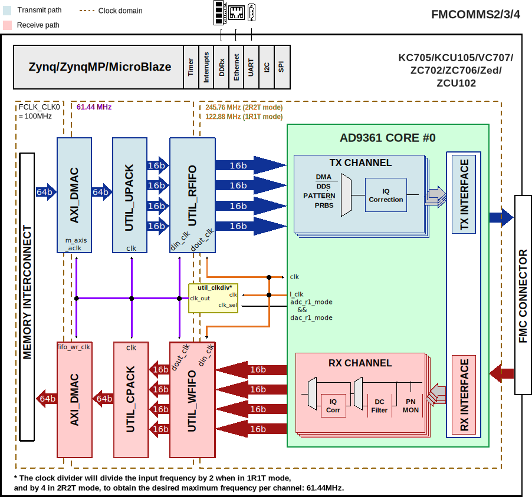
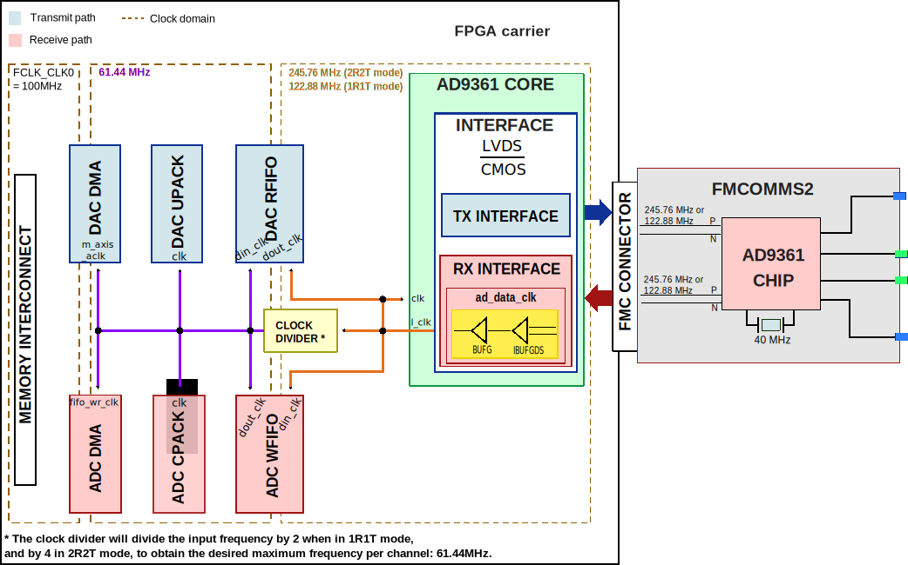

FMCOMMS2/3/4 HDL Project
Overview
The AD-FMCOMMS2/3/4/5-EBZ are a high-speed analog modules designed to showcase the AD9361 or AD9364, a high performance, highly integrated RF agile transceiver intended for use in RF applications.
Tip
The AD9361 consists of 2 receive and 2 transmit paths (2 Rx, 2 Tx).
The only difference between AD9361 and AD9364 (1 Rx, 1 Tx) is the number of channels. Software, HDL, pinout, etc - is all the same.
The AD9361 and AD9364 chips operate in the 70MHz to 6GHz range, covering most licensed and unlicensed bands. The boards, due to discrete external components may have less performance on some of the RF input/output connectors (for example - the FMCOMMS2 and specific connectors on the FMCOMMS5 are specifically tuned to 2.4GHz). The AD9361 and AD9364 both supports channel bandwidths from less than 200kHz to 56MHz by both changing sample rate, and by changing digital filters, and decimation inside the device itself.
The digital interface consists of 12 bits of DDR data and supports full duplex operation in all configurations up to 2×2. The transmit and receive data paths share a single clock. The data is sent or received based on the configuration (programmable) from separate transmit and to separate receive chains.
Supported boards
Supported devices
Supported carriers
Block design
In the receive direction, each component of the delineated data is passed to a PN monitor. The monitors validates the digital interface signal capture and timing. The data then optionally DC-filtered, corrected for I/Q offset and phase mismatches and is written to the external DDR memory via DMA. An optional off-line FFT core may be used to generate a spectrum plot.
In the transmit direction, complex I and Q signals are generated for each RF. The digital source could either be an internal DDS or from the external DDR via VDMA. The internal DDS phase and frequency are programmable.
Block diagram
The data path and clock domains are depicted in the below diagram.
{kind=link}
Clock scheme
The clocks are managed by the device and are software programmable. Please refer to the device data sheet for the various clocks within the device.
The board provides a 40MHz crystal for the AD9361.
Please note that the clock divider module in this project does a divide-by 2 operation to get the desired clock for a single channel in case of mode 1R1T (2x RF channels), and a divide-by 4 in case of 2R2T (4x RF channels).
{kind=link}
Configuration modes
The AD9361 IP in this HDL project is configured to work only in LVDS interface; it supports two configuration modes:
2R2T - 2x receive and 2x transmit RF channels
1R1T - 1x receive and 1x transmit RF channel
Both support only the dual port half duplex operating mode. The maximum data rate (for combined I and Q words) is 61.44MSPS in DDR. For more details about these modes, check the AD9361 Reference Manual, Table 48 “Maximum Data Rates and Signal Bandwidths”.
CPU/Memory interconnects addresses
The addresses are dependent on the architecture of the FPGA, having an offset added to the base address from HDL (see more at CPU/Memory interconnects addresses).
Instance |
Zynq/Microblaze |
ZynqMP |
|---|---|---|
axi_ad9361_adc_dma |
0x7C40_0000 |
0x9C40_0000 |
axi_ad9361_dac_dma |
0x7C42_0000 |
0x9C42_0000 |
axi_ad9361 |
0x7902_0000 |
0x9902_0000 |
SPI connections
The SPI signals are controlled by a separate AXI based SPI core.
SPI type |
SPI manager instance |
SPI subordinate |
CS |
|---|---|---|---|
PS |
SPI 0 |
AD9361 |
0 |
PMOD |
SPI 1 |
spi_udc |
0 |
GPIOs
The device control and monitor signals are interfaced to a GPIO module.
GPIO signal |
Direction |
HDL GPIO EMIO |
Software GPIO |
Software GPIO |
|---|---|---|---|---|
(from FPGA view) |
Zynq-7000 |
Zynq MP |
||
gpio_muxout_tx* |
INOUT |
50 |
104 |
128 |
gpio_muxout_rx* |
INOUT |
49 |
103 |
127 |
up_txnrx |
IN |
48 |
102 |
126 |
up_enable |
IN |
47 |
101 |
125 |
gpio_resetb |
OUT |
46 |
100 |
124 |
gpio_sync |
OUT |
45 |
99 |
123 |
gpio_en_agc |
OUT |
44 |
98 |
122 |
gpio_ctl[3:0] |
OUT |
43:40 |
97:94 |
121:118 |
gpio_status[7:0] |
IN |
39:32 |
93:86 |
117:110 |
Interrupts
Below are the Programmable Logic interrupts used in the project.
Instance name |
HDL |
Linux Zynq |
Actual Zynq |
Linux ZynqMP |
Actual ZynqMP |
|---|---|---|---|---|---|
axi_ad9361_adc_dma |
13 |
57 |
89 |
109 |
141 |
axi_ad9361_dac_dma |
12 |
56 |
88 |
108 |
140 |
Building the HDL project
The design is built upon ADI’s generic HDL reference design framework. ADI distributes the bit/elf files of these projects as part of the ADI Kuiper Linux. If you want to build the sources, ADI makes them available on the HDL repository. To get the source you must clone the HDL repository.
When building the project for FMCOMMS3/4, it is the same as for FMCOMMS2. The only difference is in the Linux device tree, but in HDL there is no difference. So go to the hdl/projects/fmcomms2/$carrier location and run the make command.
Linux/Cygwin/WSL
~$
cd hdl/projects/fmcomms2/zcu102
~/hdl/projects/fmcomms2/zcu102$
make
A more comprehensive build guide can be found in the Build an HDL project user guide.
Resources
More information
Support
Analog Devices, Inc. will provide limited online support for anyone using the reference design with ADI components via the EngineerZone FPGA reference designs forum.
For questions regarding the ADI Linux device drivers, device trees, etc. from our Linux GitHub repository, the team will offer support on the EngineerZone Linux software drivers forum.
For questions concerning the ADI No-OS drivers, from our No-OS GitHub repository, the team will offer support on the EngineerZone microcontroller No-OS drivers forum.
It should be noted, that the older the tools’ versions and release branches are, the lower the chances to receive support from ADI engineers.